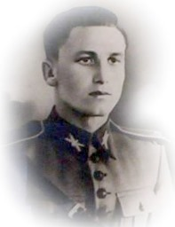

Rio Negro e Região na Segunda Guerra Mundial
Nossa Região enviou cerca de 84 (oitenta e quatro) jovens que convocados, voluntariamente, foram incorporados às diversas unidades da Força Expedicionária Brasileira. Alguns não voltaram, como Ten Ary Rauen, Sargento Max Wolff Filho, Adir Jorge, Gumercindo da Silva e Luiz Stoeberl Filho.
Em Rio Negro - PR, na praça Sargento Max Wolff Filho, existe um monumento com nome dos rionegrenses que participaram da 2ª Guerra Mundial. Em Mafra, na Praça do Expedicionário monumento semelhante homenageia os Mafrenses.
Rio Negro e região, tem orgulho de ter sido o berço de gloriosos heróis que fizeram parte da Força Expedicionária Brasileira (FEB) durante a Segunda Guerra Mundial. Eles deixaram suas casas, famílias e a tranquilidade de suas vidas para lutar pela liberdade e pela paz em terras distantes. Seus nomes e histórias são símbolos de coragem, sacrifício e patriotismo. Aqui, celebramos alguns desses notáveis filhos de Rio Negro e região:
Sargento Max Wolf Filho
O Sargento Max Wolf Filho é uma das figuras mais reverenciadas da Força Expedicionária Brasileira (FEB), destacando-se por sua coragem e liderança durante a Segunda Guerra Mundial. Natural de Rio Negro, Paraná, sua vida e carreira militar são exemplos de dedicação e heroísmo.
Nasceu em 29 de julho de 1911, em Rio Negro, uma cidade conhecida por sua rica história e pela comunidade unida. Desde jovem, Max demonstrou um forte senso de dever e um profundo amor por sua pátria, valores que o guiariam por toda a vida.
Iingressou no Exército Brasileiro aos 20 anos, iniciando sua carreira militar com determinação e compromisso. Ao longo dos anos, ele foi promovido a sargento, destacando-se por suas habilidades de liderança e pelo respeito que conquistou entre seus colegas.
Com a entrada do Brasil na Segunda Guerra Mundial em 1942, Max Wolff Filho foi um dos muitos soldados brasileiros selecionados para integrar a Força Expedicionária Brasileira, enviada para lutar ao lado dos Aliados na Europa. Embarcando para a Itália, Max e seus companheiros da FEB enfrentaram condições difíceis e combates intensos.
Serviu com distinção durante a campanha italiana, participando de várias batalhas cruciais. Ele se destacou especialmente em missões de reconhecimento e infiltração, onde sua coragem e habilidade tática salvaram muitas vidas e garantiram o sucesso de operações importantes. Sua capacidade de liderança sob fogo inimigo e sua determinação inabalável fizeram dele um exemplo para todos os soldados da FEB.
Em 12 de abril de 1945, durante uma missão de reconhecimento em Montese, na Itália, Max Wolf Filho foi mortalmente ferido. Mesmo em seus momentos finais, ele mostrou a mesma bravura que caracterizou toda a sua carreira. Seu sacrifício não foi em vão, pois ajudou a garantir a liberdade e a paz para futuras gerações.
O Sargento Max Wolf Filho é lembrado como um verdadeiro herói nacional. Sua bravura e sacrifício foram reconhecidos postumamente com várias condecorações, incluindo a Cruz de Combate de 1ª Classe e a Medalha de Sangue do Brasil. Em Rio Negro, sua cidade natal, possui uma praça com seu nome e em 27 de abril de 2007, conforme Portaria nº 229, de 23 de abril de 2007, o Comandante do Exército, concedeu à Escola de Sargentos Armas a denominação histórica "ESCOLA SARGENTO MAX WOLF FILHO", tornando o Sgt Max Wolf Filho seu patrono.
BIBLIOGRAFIA
- Trinta anos depois da volta - Gen Octávio Costa
- Cinqüentenário da morte em combate do Sargento Max Wolff Filho - Cel Claudio Moreira Bento
- Citações de combate do Sargento Wolff
- Ten Ary Rauen

Ary Rauen nasceu em 20 de maio de 1922 na cidade de Papanduva-SC, que na época era um distrito da cidade de Canoinhas-SC. É filho de Alfredo Rauen e de Maria Werber Rauen. Seus pais trabalhavam com comércio, exploração de erva-mate, pecuária e lavoura. Morou na cidade de Mafra-SC de 1927 a 1934, onde estudou na Escola Paroquial “São José” e no antigo Grupo Escolar “Professor Luiz Eves”, posteriormente chamado “Duque de Caxias”.
Entre 1934 e 1939 frequentou o “Lyceu Rio Branco”, em Curitiba-PR, onde concluiu o curso ginasial, sendo escolhido o orador da turma por seus colegas.Deu continuidade aos seus estudos com o curso complementar pré-médio do “Ginásio Paranaense”, ao mesmo tempo em que sentou praça na Base Aérea de Curitiba, onde serviu até o ano de 1941, quando deu baixa na graduação de Sargento.
Matriculou-se, então, no Centro de Preparação de Oficiais da Reserva (CPOR) de Curitiba, diretamente no 3º ano, pois já era Sargento da Reserva. Em 1942 concluiu o Curso de Oficial da Reserva, classificando-se em 1º lugar, sendo o orador da sua turma e recebendo como prêmio a Espada de Oficial, que hoje repousa no Museu do 5º RCC. Foi declarado Aspirante-a-Oficial e convocado a estagiar no 14º Batalhão de Caçadores, em Florianópolis-SC, o que o fez durante três meses, com dedicação, esforço e brilhantismo, vindo a ser promovido ao posto de 2º Tenente.
Com a entrada do Brasil na 2ª Guerra Mundial, foi convocado para integrar a Força Expedicionária Brasileira (FEB), tendo sido classificado no 11º Regimento de Infantaria (atual 11º Batalhão de Infantaria de Montanha), com sede em São João Del-Rei-MG. Após o período de preparação no Brasil, já no comando do 1º Pelotão da 2ª Companhia do 1º Batalhão do 11º Regimento de Infantaria, embarcou, em setembro de 1944, junto dos 2º e 3º escalões para o Teatro de Operações da Itália. Participou das batalhas de Monte Castello, Castelnuovo e Montese. Durante um ataque a Monte Castello, quando do recuo inesperado de sua companhia, manteve seu pelotão em posição, avisando a seus comandados que poderia retrair aquele que não estivesse preparado para o sacrifício.
O Tenente Ary Rauen é lembrado como um herói nacional. Sua bravura e sacrifício foram reconhecidos com várias condecorações, incluindo a Cruz de Combate de 1ª Classe, em homenagem à sua dedicação e coragem. Sua memória é preservada em Rio Negro, onde sua história continua a ser contada e celebrada. Em 4 de abril de 2005 através da Portaria Nº 206 publicada no Boletim do Exército Nº 16, de 22 de abril de 2005 o 5º Regimento de Carros de Combate recebeu a denominação história "Regimento Ten Ary Rauen" como forma de homenagear e cultar a memória do herói que tombou bravamente em combate.
Soldado Adir Jorge
O Soldado Adir Jorge é uma figura emblemática entre os heróis da Força Expedicionária Brasileira (FEB), que lutou bravamente durante a Segunda Guerra Mundial. Natural de Rio Negro, Paraná, sua vida e serviço militar exemplificam o espírito de coragem e patriotismo que marcou os combatentes brasileiros.
Adir Jorge nasceu em 2 de setembro de 1919, na cidade de Rio Negro, uma cidade no estado do Paraná conhecida por sua rica história e cultura. Desde a juventude, Adir demonstrou um forte senso de dever e amor à pátria, características que o levariam a se alistar no Exército Brasileiro. Sua formação foi marcada por valores de disciplina, respeito e responsabilidade, que moldaram sua personalidade e futura carreira militar.
Atraído pela vida militar, Adir Jorge ingressou no Exército Brasileiro em busca de servir e proteger sua nação. Sua dedicação e seriedade em seu treinamento logo o destacaram entre seus pares. Adir foi promovido a soldado, um posto que assumiu com grande orgulho e comprometimento.
Com a entrada do Brasil na Segunda Guerra Mundial em 1942, Adir Jorge foi selecionado para integrar a Força Expedicionária Brasileira, destinada a lutar ao lado dos Aliados na Europa. Embarcando para a Itália, ele se uniu a milhares de outros brasileiros que enfrentariam os desafios da guerra em um terreno distante e desconhecido.
Durante a campanha italiana, o Soldado Adir Jorge participou de várias missões e batalhas cruciais. Ele esteve presente em confrontos decisivos como a Batalha de Monte Castelo e a Batalha de Montese. Adir mostrou grande bravura e determinação, desempenhando suas funções com eficiência e coragem sob fogo inimigo. Sua dedicação em campo ajudou a garantir o sucesso das operações da FEB.
Ao longo de sua jornada militar, Adir Jorge enfrentou inúmeras adversidades e perigos. Sua coragem em situações de risco extremo destacou-se repetidamente, demonstrando um comprometimento inabalável com sua missão e seus companheiros. Infelizmente, como muitos de seus colegas, Adir Jorge fez o sacrifício supremo pela liberdade, sendo lembrado como um verdadeiro herói.
O Soldado Adir Jorge é lembrado com grande respeito e admiração, tanto em sua cidade natal, Rio Negro, quanto em todo o Brasil. Sua bravura e sacrifício foram reconhecidos postumamente, e ele é homenageado por meio de monumentos, ruas e cerimônias dedicadas aos heróis da FEB. Sua memória vive nas histórias e nos corações daqueles que celebram seu exemplo de patriotismo e coragem. Adir Jorge ganhou as telas de TV em 2010, por meio de um curta-metragem, intitulado "o Pracinha de Rio Negro", exibido no quadro "Casos e Causos" do programa "Revista RPC" em 24 de outubro e em 02 de janeiro de 2011.
Soldado Gumercindo da Silva
Gumercindo da Silva nasceu em 15 de agosto de 1921, na pequena cidade de Rio Negro, Paraná. Cresceu em uma família humilde, onde aprendeu desde cedo os valores do trabalho árduo e da solidariedade. Sua infância foi marcada por brincadeiras ao ar livre e uma educação básica que o preparou para os desafios da vida adulta. Desde jovem, Gumercindo demonstrou um forte senso de dever e um espírito aventureiro, características que o acompanhariam ao longo de sua vida.
Movido pelo desejo de servir à sua pátria, Gumercindo da Silva ingressou no Exército Brasileiro, onde encontrou uma vocação para a vida militar. Sua determinação e habilidade logo se destacaram, e ele se dedicou com afinco ao treinamento rigoroso que recebeu. Promovido a soldado, Gumercindo mostrou-se um militar exemplar, comprometido com suas responsabilidades e sempre disposto a ajudar seus companheiros.
Com a eclosão da Segunda Guerra Mundial e a entrada do Brasil no conflito em 1942, Gumercindo da Silva foi selecionado para integrar a Força Expedicionária Brasileira. A FEB foi enviada à Europa para combater ao lado das forças Aliadas contra o Eixo. Gumercindo embarcou com coragem e determinação, preparado para enfrentar os desafios desconhecidos que o aguardavam na Itália.
Embarcou para a Itália em 20 de setembro de 1944 subordinado ao 11º Regimento de Infantaria, e tombou em combate em ação no dia 18 de fevereiro de 1945 na cidade de Palazzo - Itália. Foi condecorado com as medalhas: Medalha de Campanha, Medalha de Sangue do Brasil, Cruz de Combate de 2ª classe
Soldado Luiz Stoeberl Filho

Luiz Stoeberl Filho nasceu em 3 de janeiro de 1921, em Rio Negro, Paraná. Cresceu em uma família trabalhadora, onde desde cedo aprendeu os valores do esforço e da determinação. A infância de Luiz foi típica das crianças de sua época, repleta de brincadeiras ao ar livre e aprendizado prático. Desde jovem, ele demonstrou um forte senso de dever e responsabilidade, características que o acompanhariam por toda a vida.
Após a entrada do Brasil no conflito em 1942, Luiz Stoeberl Filho foi selecionado juntamente com os outros heróis já citados, para integrar a Força Expedicionária Brasileira. A FEB foi enviada à Europa para combater ao lado das forças Aliadas contra o Eixo. Gumercindo embarcou com coragem e determinação, preparado para enfrentar os desafios desconhecidos que o aguardavam na Itália.
O soldado Stoeberl faleceu no dia 18 de abril de 1945 quando junto da 9ª Companhia, atacava a cidade de Montese. Citado pelo decreto de sua condecoração como tendo agido com grande heroísmo. O soldado tombou na Itália quando com sua arma automática trocava disparos com duas posições inimigas, num bombardeio de atilharia foi ferido gravemente, e mesmo depois de caído ajudou sua tropa a capturar um comandante de batalhão. Luiz Stoeberl Filho foi agraciado com as medalhas: Medalha de Campanha, Sangue do Brasil, Cruz de Combate de 2ª Classe e Cruz de Combate de 1ª Classe.
Aracy Moebius de Carvalho Guimarães Rosa
Aracy Moebius de Carvalho Guimarães Rosa, conhecida também como Aracy de Carvalho, nasceu em Rio Negro, Paraná, o dia 5 de dezembro de 1908. Era filha de Amadeu Anselmo de Carvalho, um bem-sucedido empresário luso-brasileiro e da alemã Sidonie Moebius de Carvalho
Foi a segunda esposa do diplomata e escritor Guimarães Rosa. Funcionária do Itamaraty em Hamburgo, ajudou inúmeros judeus a fugir do nazismo. Conhecida como “Anjo de Hamburgo”, foi homenageada nos museus do Holocausto de Jerusalém e de Washington.
Ainda criança, Aracy mudou-se com os pais para São Paulo. Foi aluna de tradicionais colégios paulistanos o que fez dela uma jovem culta e poliglota. Em 1930, Aracy casou-se com o alemão Johann Eduard Ludwig Tess, de quem se separou quatro anos depois. Para construir uma nova vida resolveu se mudar para a Alemanha, terra de sua mãe.
Vítima do estigma que marcava as mulheres separadas, em 1934, Aracy embarcou com o filho de quatro anos em um navio rumo à Alemanha. Destemida, poliglota e culta, instalou-se na casa de uma tia e não teve dificuldade para se adaptar à vida local.Porém, com Hitler no poder desde 1933, e na eminência de uma guerra, Aracy passou privações e viu um grande número de judeus abandonar o país, até se firmar no consulado.
Fluente em português, alemão, inglês e francês, em 1936, Aracy encontrou trabalho no Itamaraty, como chefe da seção de passaportes do consulado brasileiro em Hamburgo.Enquanto se adaptava ao país, assistiu a expulsão dos judeus do funcionalismo público, testemunhou seu banimento das escolas e das universidades e, os viu perderem seus direitos e propriedades.
Aracy desafiava a obrigatoriedade de marcar com um “J “ os passaportes dos judeus. Ela juntava as autorizações de visto com os outros papeis que o cônsul deveria assinar.Mesmo correndo sérios riscos de ser descoberta e, ser entregue às forças nazistas, Aracy abrigou judeus em sua casa e transportou outros para países vizinhos. Ajudou incontáveis famílias de judeus a escapar da morte nos campos de concentração de Adolf Hitler.
Em 1938, Aracy conheceu Guimarães Rosa, que depois se tornaria um dos maiores escritores brasileiros e, seu futuro marido, que começou a servir como cônsul adjunto do Brasil em Hamburgo. Guimarães tomou conhecimento do esquema e a apoiou.Aracy e Guimarães Rosa foram investigados pelas autoridades do Brasil e da Alemanha. Em 1942, quando o Brasil rompeu relações diplomáticas com a Alemanha e se aliou aos Estados Unidos, à Inglaterra e à União Soviética, contra Hitler, o casal foi mantido por 100 dias em um hotel, em poder da Gestapo, até se estabelecer a troca de diplomatas entre os dois países.
Em 1982, Aracy Guimarães Rosa foi laureada com a mais alta honraria para os “não judeus” que se arriscaram para proteger vítimas do Holocausto – foi declarada “Justa entre as Nações”, pelo governo de Israel. Recebeu homenagens também no Museu do Holocausto de Washington e Jerusalém. Os judeus a apelidaram de “Anjo de Hamburgo”. Em Rio Negro - PR dá nome a Biblioteca Cidadã do bairro Volta Grande. Aracy Guimarães Rosa faleceu na cidade de São Paulo, no dia 3 de março de 2011, com 102 anos, em consequência do Mal de Alzheimer.
Em 2021, a história de “Aracy de Carvalho” foi contada na minissérie Passaporte para Liberdade, da TV Globo. A atriz Sophie Charlotte deu vida à protagonista.
Celebrar a bravura e o sacrifício dos heróis da Força Expedicionária Brasileira (FEB) é honrar não apenas suas trajetórias individuais, mas também o espírito de patriotismo e coragem que eles personificaram durante a Segunda Guerra Mundial. Cada soldado e pessoa, que com sua dedicação incansável e bravura inabalável, contribuiu para a história de nosso país, deixando um legado de sacrifício e determinação que jamais será esquecido. Suas vidas são um testemunho da força do povo brasileiro em momentos de adversidade, inspirando gerações futuras a valorizar a liberdade e a justiça. Que suas histórias continuem a ser contadas e reverenciadas como exemplos de verdadeiros heróis nacionais.